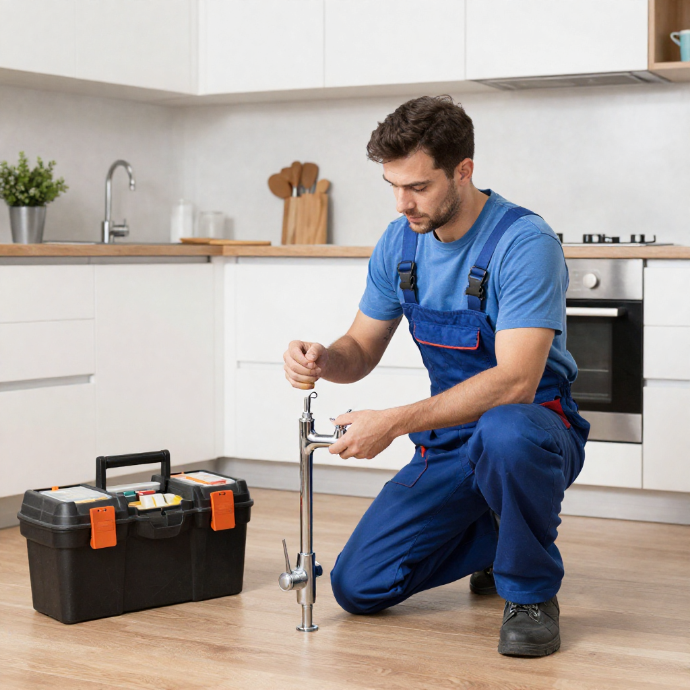
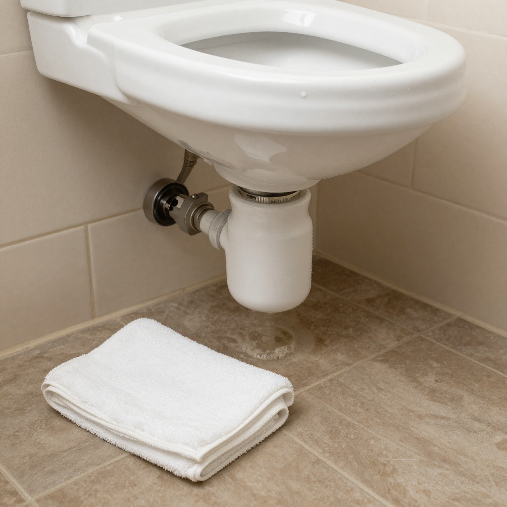
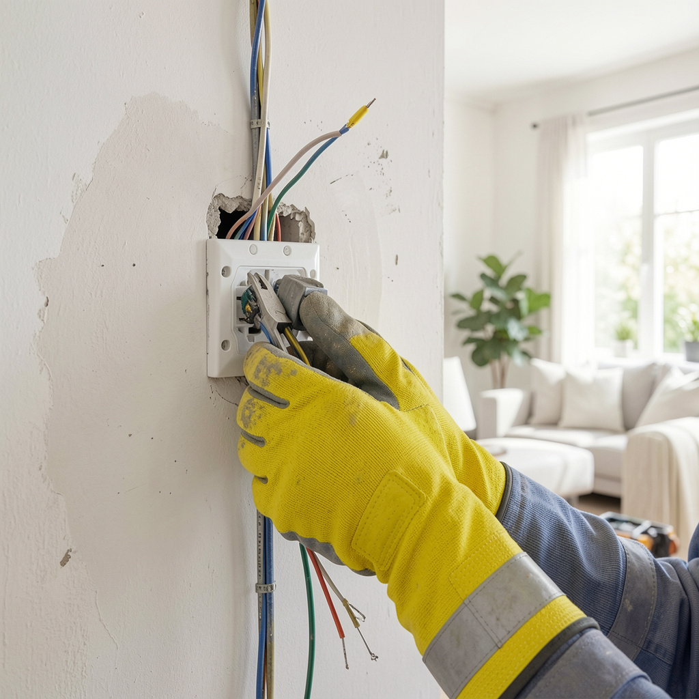
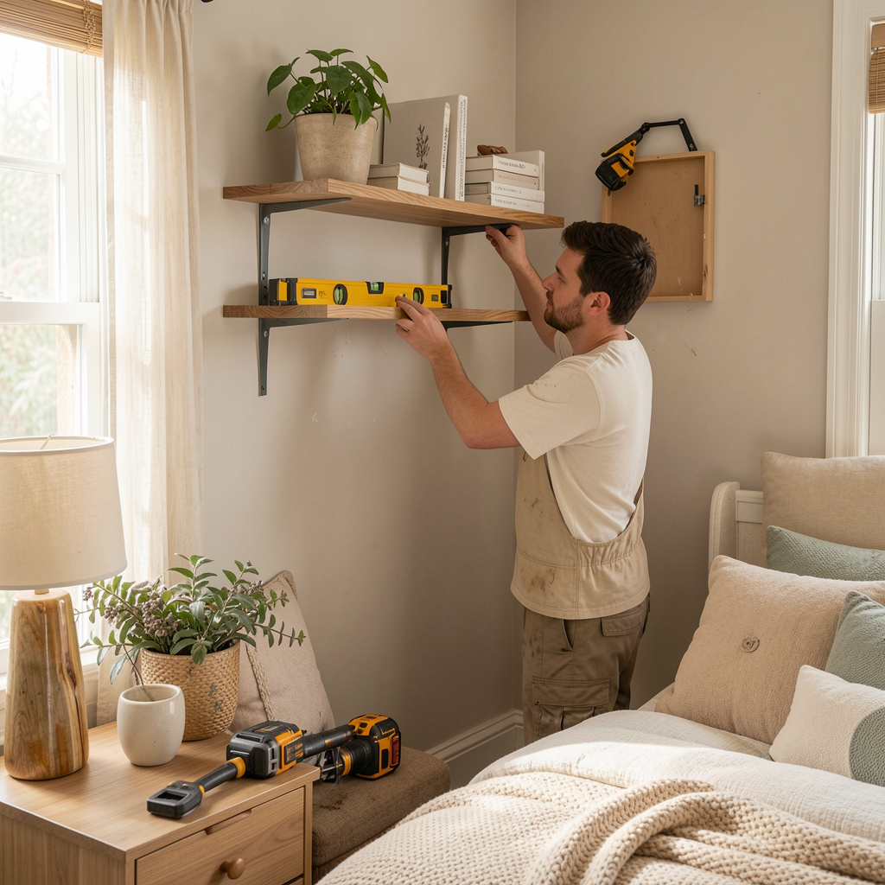

🔍
Falta de diagnóstico
El usuario describe el problema de forma incompleta y termina llamando al técnico equivocado.
ReparIA ayuda a jefes de hogar a identificar si necesitan un plomero, electricista, carpintero o técnico especializado, estimando la urgencia y preparando una descripción clara antes de contratar.
3
categorías iniciales
IA
clasificación rápida
24/7
orientación inicial




Diagnóstico ReparIA
Urgencia media
Probable fuga visible. Técnico recomendado: plomero con experiencia en grifería.
El problema
Muchos hogares enfrentan incertidumbre: no saben qué especialista llamar, si el daño es urgente, cuánto podría costar o qué preguntas hacer antes de contratar.
El usuario describe el problema de forma incompleta y termina llamando al técnico equivocado.
En una urgencia, el hogar queda vulnerable ante cotizaciones poco claras o trabajos innecesarios.
Explicar el daño una y otra vez por WhatsApp o teléfono retrasa la solución y genera frustración.
Cómo funciona
El prototipo puede funcionar con un formulario web o chat. La IA clasifica el daño, estima la urgencia y genera una ficha clara que el usuario puede enviar al técnico.
El usuario escribe qué ocurre y puede adjuntar una foto del daño.
El asistente aclara detalles: ubicación del daño, síntomas, riesgos y urgencia.
ReparIA indica categoría, posible causa, riesgo y técnico recomendado.
El usuario recibe preguntas clave para evitar confusiones, abusos o garantías débiles.
Categorías iniciales
Fugas, sanitarios, griferías, lavamanos, filtraciones y daños visibles de agua.
Cortos, breakers, tomas, luces, riesgos eléctricos y fallas por zonas.
Puertas, repisas, muebles, bisagras, instalaciones y ajustes básicos.
Propuesta de valor
La solución reduce la incertidumbre antes de la contratación, mejora la comunicación con el proveedor y ayuda a identificar señales de riesgo desde el primer contacto.
Sugiere si necesitas plomero, electricista, carpintero u otro especialista.
Clasifica el caso como bajo, medio, alto o crítico.
Genera una descripción clara para enviar por WhatsApp o correo.
Recomienda preguntas sobre precio, garantía, materiales y tiempos.
MVP simple
Para la primera versión, ReparIA puede funcionar como una landing page con formulario. El objetivo es validar si el usuario siente más confianza al recibir una orientación inicial antes de contactar a un técnico.
Contacto
Déjanos tus datos y cuéntanos qué tipo de problema del hogar quieres diagnosticar. Esta landing está lista para validar interés, recoger casos y contactar usuarios del target.
Correo de contacto
hernando.mercado@gmail.com